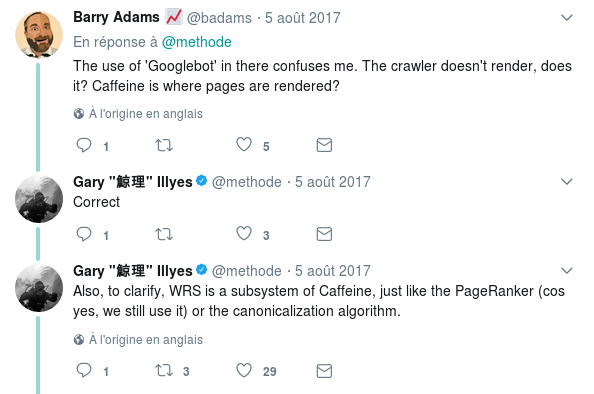
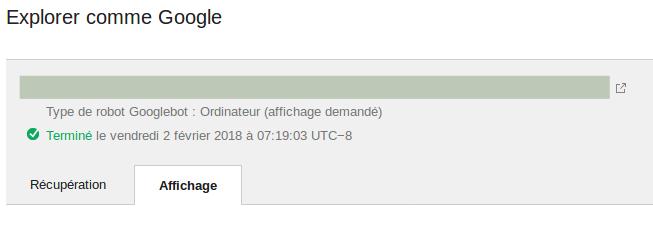
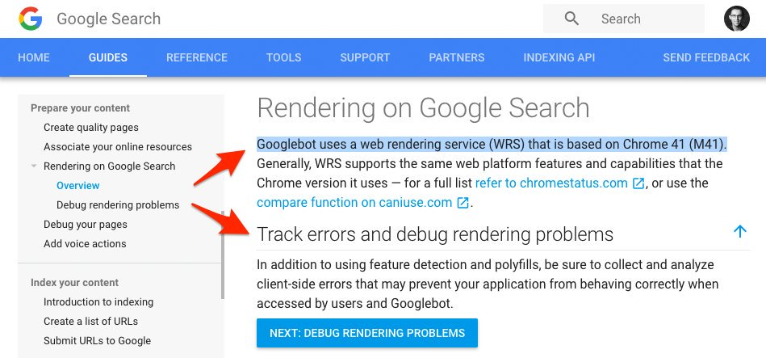
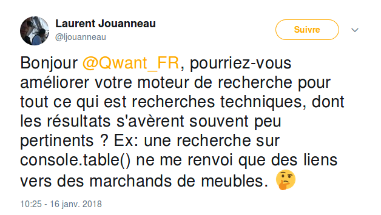
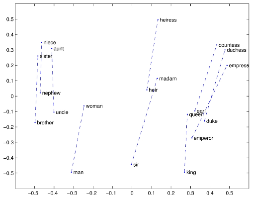
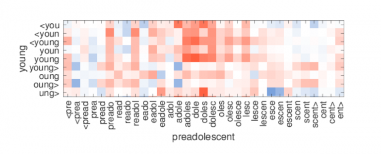
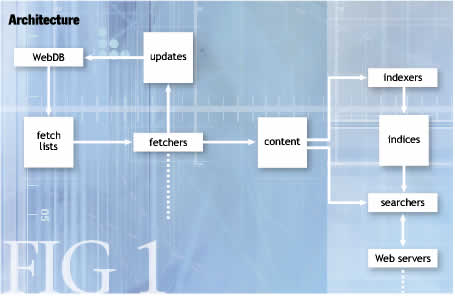

Écrivez votre moteur de recherche
SCraping & Machine Learning

Qui suis-je ?
Expert Drupal - SEO
L'instant storytelling
Fin octobre 2017
Mais…

Mi-novembre 2017
Une question de vocabulaire
Une question de vocabulaire
GoogleBot, c'est l'étape 1 !
Il n'interprète pas le javascript
Une question de vocabulaire
L'indexation, c'est "Caffeine"
D'ailleurs…
D'ailleurs…
Indexing
Traitement naturel du langage (NLP)
- Nettoyage HTML
- HTML -> texte
- Traitement du texte
Nettoyage HTML
TO DO Image JS
HTML to text
TO DO ???
Traitement du texte
Nettoyage (ponctuation, stop words, …)
Découpage en phrases
Découpage en mots
Mais ce n'est pas facile !
Les ordinateurs ne comprennent pas le texte !
On va le transformer en chiffres
- Compte
- Tf-Idf
- Co-occurences
Compte
"Les oiseaux chantent dans les arbres"
TO DO
Tf-Idf
Tient compte de la fréquence des mots dans le corpus
=> Élimination des "stop words", mise en valeur des mots significatifs
Co-occurences
Les documents similaires vont comporter des mots similaires
LSI
On compte les mots dans le document
TO DO Vidéo Wikipedia
Source : Wikipedia, LSI
LDA
Basé sur des probabilités
Idée maîtresse : pas plus de 2 à 3 sujets par documents
Word2Vec
Google, 2013
Word2Vec

Aujourd'hui ?
GloVe (Stanford)
FastText (Facebook)
Le ranking
TO DO
Plein de choses à faire
- PageRank
- "Qualité du site"
- N-grams
- Knowledge Graph
Schéma du crawler (Nutch)
 Source : Building Nutch: Open Source SearchSchéma générique du ranker
Et la recherche vocale ?
TO DO